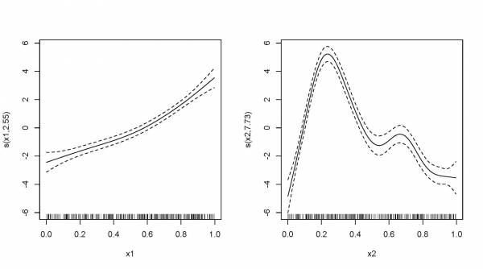

Chapter 5 Multiple smooth terms
GAMs make it easy to include both smooth and linear terms, multiple
smoothed terms, and smoothed interactions. For this section, we’ll be
using a dataset automatically generated by the gamSim() command of the
mgcv package. For further details on what type of data you can
simulate with this function, see ?gamSim. For this section, we will
use the example 5 (eg=5) of gamSim, which simulates an additive example
plus a factor variable.
We will now look at how we can predict y based on the other variables.
Start with a basic model, with one smoothed term (x1) and one
categorical predictor (x0, which has 4 levels).
basic_model = gam(y ~ x0 + s(x1), data = gam_data)
basic_summary = summary(basic_model)
print(basic_summary$p.table)
print(basic_summary$s.table)
plot(basic_model)Here, the p.table provides the significance table for each parametric
term and the s.table is the significance table for smooths. Note that
for the latter, the wiggleness of the smoothed term s(x1) is indicated
by the edf parameter (effective degrees of freedom); the higher the edf,
the more non-linear the smoothing spline. A high value (8–10 or higher)
means that the curve is highly non-linear, whereas a smoother with 1
effective degree of freedom is a straight line. In contrast, in linear
regression the model degrees of freedom is equivalent to the number of
non-redundant free parameters, p, in the model (and the residual
degrees of freedom are given by n-p). We will revisit the edf later in
this workshop.
print(basic_summary$p.table)
Estimate Std. Error t value Pr(>|t|)
(Intercept) 8.550030 0.3655849 23.387258 1.717989e-76
x02 2.418682 0.5165515 4.682364 3.908046e-06
x03 4.486193 0.5156501 8.700072 9.124666e-17
x04 6.528518 0.5204234 12.544629 1.322632e-30
> print(basic_summary$s.table)
edf Ref.df F p-value
s(x1) 1.923913 2.406719 42.84268 1.076396e-19In our basic model the edf of smooth function s(x1) is ~2, which
suggests a non-linear curve. The plot of the model nicely illustrates
the shape of this non-linear smoother:

We can add a second term, x2, but specify a linear relationship with y
(that is, both linear and non-linear terms can be included in GAM). The
new linear term, x2, will appear in the p.table, for which a
regression coefficient estimate is indicated. In the s.table, we will
once again find the non-linear smoother, s(x1), and its wiggleness
parameter.
two_term_model <- gam(y ~ x0 + s(x1) + x2, data = gam_data)
two_term_summary <- summary(two_term_model)
print(two_term_summary$p.table)
print(two_term_summary$s.table)If we wish to explore whether the relationship between y and x2 is
non-linear, we can model x2 as non-linear smooth term instead. As
before, we can use an ANOVA to test if the smoothed term is necessary.
two_smooth_model <- gam(y ~ x0 + s(x1) + s(x2), data = gam_data)
two_smooth_summary <- summary(two_smooth_model)
print(two_smooth_summary$p.table)
print(two_smooth_summary$s.table)
plot(two_smooth_model, page = 1)
When more than one covariable is included in the model, as above, the fitted response can be partitioned into the contributions of each variable as shown. Here we can appreciate the varying magnitude of the effect of each variable; where the y-axis represents the contribution (effect) of each covariate to the fitted response, centered on 0. If the confidence intervals had overlapped with zero for certain values of x (or throughout the entire range), this would imply a non-significant effect at those x values (or of x in entirety). When the contribution for an individual covariate changes along the range of x-axis, the change in that covariate is associated with a change in the response.
Analysis of Deviance Table
Model 1: y ~ x0 + s(x1)
Model 2: y ~ x0 + s(x1) + x2
Model 3: y ~ x0 + s(x1) + s(x2)
Resid. Df Resid. Dev Df Deviance Pr(>Chi)
1 394.08 5231.6
2 393.10 4051.3 0.97695 1180.2 < 2.2e-16 ***
3 385.73 1839.5 7.37288 2211.8 < 2.2e-16 ***
---
Signif. codes: 0 ‘***’ 0.001 ‘**’ 0.01 ‘*’ 0.05 ‘.’ 0.1 ‘ ’ 1The best fit model is the model with both smooth terms for x1 and x2.
5.1 CHALLENGE 2
Create two new models, with x3 as a linear and smoothed term. Use plots,
coefficient tables and the anova function to determine if x3 is an
important term to include.
5.1.1 Challenge 2 solution
three_term_model <- gam(y ~ x0 + s(x1) + s(x2) + x3, data = gam_data)
three_smooth_model <- gam(y ~ x0 + s(x1) + s(x2) + s(x3), data = gam_data)
three_smooth_summary <- summary(three_smooth_model)
print(three_smooth_summary$p.table)
print(three_smooth_summary$s.table)
plot(three_smooth_model, page = 1)
# edf = 1 therefore term is linear.
anova(two_smooth_model, three_term_model, test = "Chisq")
# term x3 is not significant